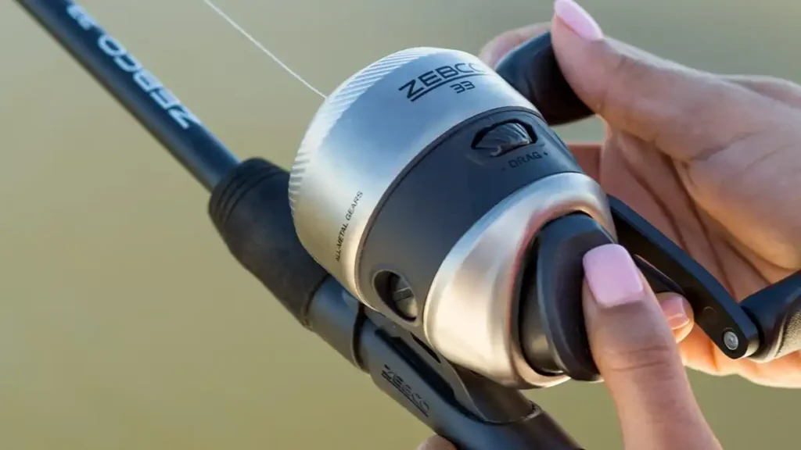

Zebco 33 Spincast Combo

(Cabela’s, n.d.)
Zebco has been around for decades, but most experienced anglers will tell you that the Zebco push-button rod & reel combo is the most beginner-friendly combo on the market. You can't get any more beginner-friendly than this.
The reel has a heavy duty stainless steel cover that can handle being dropped onto a dock. There is bite alert technology; a clicking noise is produced when the fish pulls the bait.

(Albanese, 2025)
The combo is mostly ready the minute you take it out of the package. There's no need to find and put in a fishing line because it comes with one.
You can find this combo typically at around $30!
References:
- Outdoor Life. (n.d.). Best spincast reels. https://www.outdoorlife.com/gear/best-spincast-reels/
- Albanese, J. (2025, December 2). The best spincast reels for 2026. Wired2Fish. https://www.wired2fish.com/buyers-guides/best-spincast-reels
- Bass Pro Shops. (n.d.). Zebco 33 spincast combo. https://www.basspro.com/p/zebco-33-spincast-combo
- Cabela’s. (n.d.). Zebco 33 spincast combo with bonus reel. https://www.cabelas.com/p/zebco-33-spincast-combo-with-bonus-ree